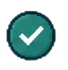

Choose the right resource
Build understanding
Use a course when someone needs a connected explanation, practice, and a way to check understanding.
✓
Match the format to the learning need.
I design and build software for learning: visual authoring tools, reusable content systems, and the interfaces that connect them.

design → build → interactExplore the interfaces and the engineering decisions behind each system.
I built a static public site and a local Flask application around the same content. Bespoke project pages retain their own interactions; structured records provide navigation, metadata, and validation.
<section class="learning"> content + interaction responsive presentation</section> MY PRODUCTCode Block Composer
MY PRODUCTCode Block ComposerI built Code Block Composer because I wanted to create interactive learning without rebuilding the same content, layout, and behavior from scratch. I designed separate paths for visual composition, guided authoring, editable media, and reusable templates so the starting point fits the work.
I made the visual editor an independent workspace because authors need direct control over the experience. I kept content, layers, interactions, and motion close to the canvas so each change can be judged in context.
Why I separated it: Visual authors can build without passing through a guided template.
Code Block ComposerLearning block / Decision practiceReady to editUse a course when someone needs a connected explanation, practice, and a way to check understanding.
Match the format to the learning need.
The interface is one part of the system. Content structure, compatibility, and recovery determine whether it stays useful.
Structured records carry titles, relationships, and reusable fields. HTML, CSS, and JavaScript own the rendered experience and its behavior.
content → component → experienceResponsive layouts, packaged assets, and clear import boundaries matter when a block moves between an editor, a web page, and a learning platform.
HTML + CSS + JS · JSON · XML
Keyboard navigation, focus states, readable contrast, meaningful labels, and reduced motion are part of the interaction itself.
input → state → useful feedbackOpen the repositories or explore how the public sites and local tools connect in the GitHub Build Lab.